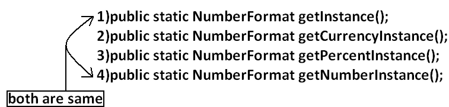
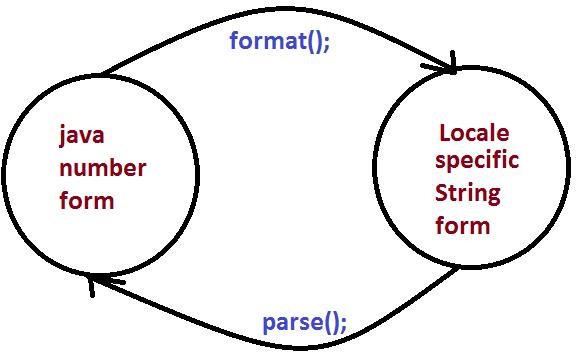
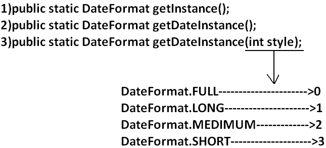
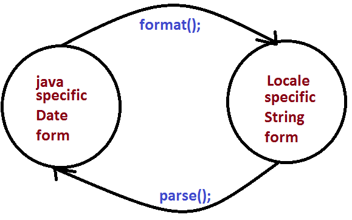
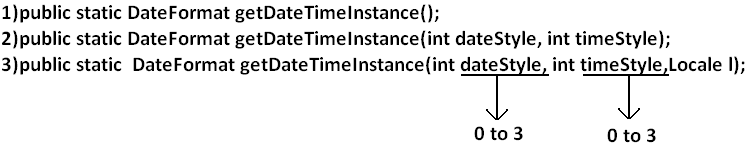

Internationalization (I18N)Agenda
IntroductionThe process of designing a web application such that it supports various countries, various languages without performing any changes in the application is called Internationalization. If the request is coming from India then the response should be in India specific form , and if the request is from US then the response should be in US specific form. We can implement Internationalization by using the following classes.They are:
1. Locale:
How to create a Locale object:We can create a Locale object by using the following constructors of Locale class.Locale l=new Locale(String language); Locale l=new Locale(String language,String country);Locale class already defines some predefined Locale constants. We can use these constants directly. Example: Locale. UK Locale. US Locale. ITALY Locale. CHINA Important methods of Locale class:
Example for Locale:
import java.util.*;
class LocaleDemo{
public static void main(String args[]){
Locale l1=Locale.getDefault();
//System.out.println(l1.getCountry()+"....."+l1.getLanguage());
//System.out.println(l1.getDisplayCountry()+"....."+l1.getDisplayLanguage());
Locale l2=new Locale("pa","IN");
Locale.setDefault(l2);
String[] s3=Locale.getISOLanguages();
for(String s4:s3)
{
//System.out.print("ISO language is :");
//System.out.println(s4);
}
String[] s4=Locale.getISOCountries();
for(String s5:s4)
{
System.out.print("ISO Country is:");
System.out.println(s5);
}
Locale[] s=Locale.getAvailableLocales();
for(Locale s1:s)
{
//System.out.print("Available locales is:");
//System.out.println(s1.getDisplayCountry()+"......"+s1.getDisplayLanguage());
}}}
2. NumberFormat:Various countries follow various styles to represent number.Example: double d=123456.789; 1,23,456.789------------INDIA 123,456.789-------------US 123.456,789-------------ITALY
Getting NumberFormat object for the default Locale:NumberFormat class defines the following methods for this.  Getting NumberFormat object for the specific Locale:
 Requirement: Write a program to display java number form into Italy specific form.
Example:
import java.util.*;
import java.text.*;
class NumberFormatDemo
{
public static void main(String args[]){
double d=123456.789;
NumberFormat nf=NumberFormat.getInstance(Locale.ITALY);
System.out.println("ITALY form is :"+nf.format(d));
}
}
Output:
ITALY form is :123.456,789
Requirement: Write a program to print a java number in INDIA, UK, US and ITALY currency formats.
Program:
import java.util.*;
import java.text.*;
class NumberFormatDemo
{
public static void main(String args[]){
double d=123456.789;
Locale INDIA=new Locale("pa","IN");
NumberFormat nf=NumberFormat.getCurrencyInstance(INDIA);
System.out.println("INDIA notation is :"+nf.format(d));
NumberFormat nf1=NumberFormat.getCurrencyInstance(Locale.UK);
System.out.println("UK notation is :"+nf1.format(d));
NumberFormat nf2=NumberFormat.getCurrencyInstance(Locale.US);
System.out.println("US notation is :"+nf2.format(d));
NumberFormat nf3=NumberFormat.getCurrencyInstance(Locale.ITALY);
System.out.println("ITALY notation is :"+nf3.format(d));
}}
Output:
INDIA notation is: INR 123,456.79
UK notation is: ú123,456.79
US notation is: $123,456.79
ITALY notation is: Ç 123.456,79
Setting Maximum, Minimum, Fraction and Integer digits:NumberFormat class defines the following methods for this purpose.
Example:
import java.text.*;
public class NumberFormatExample
{
public static void main(String[] args){
NumberFormat nf=NumberFormat.getInstance();
nf.setMaximumFractionDigits(3);
System.out.println(nf.format(123.4));
System.out.println(nf.format(123.4567));
nf.setMinimumFractionDigits(3);
System.out.println(nf.format(123.4));
System.out.println(nf.format(123.4567));
nf.setMaximumIntegerDigits(3);
System.out.println(nf.format(1.234));
System.out.println(nf.format(123456.789));
nf.setMinimumIntegerDigits(3);
System.out.println(nf.format(1.234));
System.out.println(nf.format(123456.789));
}}
Output:
123.4
123.457
123.400
123.457
1.234
456.789
001.234
456.789
3. DateFormat:Various countries follow various styles to represent Date. We can format the date according to a particular locale by using DateFormat class. DateFormat class present in java.text package and it is an abstract class.Getting DateFormat object for default Locale:DateFormat class defines the following methods for this purpose. The dafault style is Medium style
Getting DateFormat object for the specific Locale:public static DateFormat getDateInstance(int style, Locale l); Once we got DateFormat object we can format and parse Date by using the following methods. public String format(Date date); To convert the date from java form to locale specific string form. public Date parse(String source)throws ParseException To convert the date from locale specific form to java form.  Requirement: Write a program to represent current system date in all possible styles of us format.
Program:
import java.text.*;
import java.util.*;
public class DateFormatDemo
{
public static void main(String args[]){
System.out.println("full form is :"+DateFormat.getDateInstance(0).format(new Date()));
System.out.println("long form is :"+DateFormat.getDateInstance(1).format(new Date()));
System.out.println("medium form is :"+DateFormat.getDateInstance(2).format(new Date()));
System.out.println("short form is :"+DateFormat.getDateInstance(3).format(new Date()));
}
}
Output:
Full form is: Wednesday, July 20, 2011
Long form is: July 20, 2011
Medium form is: Jul 20, 2011
Short form is: 7/20/11
Note: The default style is medium style.
Requirement: Write a program to represent current system date in UK, US and ITALY styles.
Program:
import java.text.*;
import java.util.*;
public class DateFormatDemo
{
public static void main(String args[]){
DateFormat UK=DateFormat.getDateInstance(0,Locale.UK);
DateFormat US=DateFormat.getDateInstance(0,Locale.US);
DateFormat ITALY=DateFormat.getDateInstance(0,Locale.ITALY);
System.out.println("UK style is :"+UK.format(new Date()));
System.out.println("US style is :"+US.format(new Date()));
System.out.println("ITALY style is :"+ITALY.format(new Date()));
}
}
Output:
UK style is: Wednesday, 20 July 2011
US style is: Wednesday, July 20, 2011
ITALY style is: mercoled 20 luglio 2011
Getting DateFormat object to get both date and time:DateFormat class defines the following methods for this.
Example:
import java.text.*;
import java.util.*;
public class DateFormatDemo
{
public static void main(String args[]){
DateFormat ITALY=DateFormat.getDateTimeInstance(0,0,Locale.ITALY);
System.out.println("ITALY style is:"+ITALY.format(new Date()));
}
}
Output:
ITALY style is: mercoled 20 luglio 2011 23.21.30 IST
|